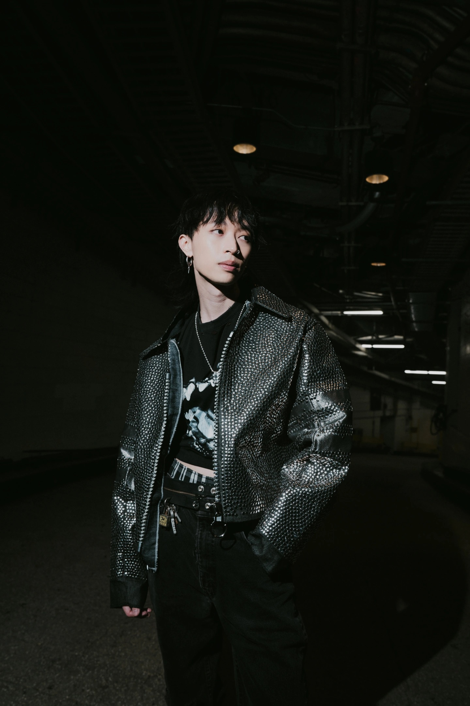

Keshi is a Vietnamese-American singer and songwriter. His music blends lo-fi hip-hop, R&B, with soft ballads. The song War is one of the songs in his album Requiem, if you like to know more about the album click here.

Hold on, you're letting go
I don't wanna lose you, baby
Feels like you're getting cold
I can't seem to reach you lately
But you turn your blade
With every shot you take
If it's love that you wanted
You'd put your pride away
Too late, we're bleeding out
I can barely hear your heartbeat
Breaking, we're going down
If I hold you close, then maybe
So I try to stay
Just for old time's sake
But you waited and waited
So I can feel the pain
Since you wanna go to war
Let's see who hurts the other more
You always got something you wanna prove
And I've got nothing left to lose
Don't know what we're fighting for
I'm tired of going back and forth
You always got something you wanna prove
And I've got nothing left to lose
Built walls, drawn lines
Look at what we've come to lately
Broke glass, spilled wine
Caught up in the crossfire, baby
Nothing left to say
You can have your way
If it's this that you wanted
Then I would've stayed away
Too much, not enough
Just to end up broken-hearted
We ran outta love
Tryna finish what we started
But you always stay
Just for old time's sake
Just to see if we make it
You never felt the same
Since you wanna go to war
Let's see who hurts the other more
You always got something you wanna prove
And I've got nothing left to lose
Don't know what we're fighting for
I'm tired of going back and forth
You always got something you wanna prove
And I've got nothing left to lose
Keshi is a Vietnamese-American singer and songwriter. His music blends lo-fi hip-hop, R&B, with soft ballads. The song War is one of the songs in his album Requiem, if you like to know more about the album click here.